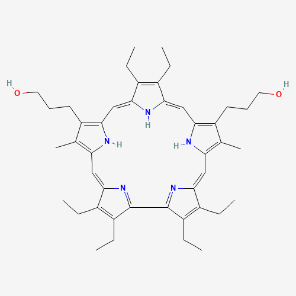

A compilation of interesting molecules:
Here’s a list of molecules I find interesting for various structure and electronic property reasons. We often get various ideas but have a harder route to execution due to commercial and physical feasibility. So I hope to preserve a record here and keep it expanding as a source of future ideas, and cross-pollination. There’s still a long list that will take me some time to fully digitize, but watch out for this space, eta Jan 2025!
| First Header | Second Header |
|---|---|
| Custom foo description | Content Cell |
| Content Cell | Content Cell |
| Class | Description | Subclasses |
|---|---|---|
| X | Some Description | Y |
| Y | Another Description | - |
| Molecule | Molecular Weight | Active Functional Group | Mol. Wt. | Stable in air? | What current & future uses can be foreseen? |
|---|---|---|---|---|---|
| Dithienopyrrole |

|
Amine and Thiol units | Excellent electron donor | ||
| 4-Aminopyridine-2,6-dicarboxylic acid |

|
Amine, Pyridine, Acid groups | Has both EDG and EWG | ||
| Porphyrin |

|
Primarily pyrrole or Nitrogen groups | Has mainly both EDG and EWG at alpha and beta pyrrole positions | ||
| Sapphyrin |  | Primarily pyrrole or Nitrogen groups | Has mainly both EDG and EWG at alpha and beta pyrrole positions |
Maintained by the
shantanukallakuri team — (Source Code)
Hosted on GitHub Pages — Powered by
Git-Wiki v2.8.1